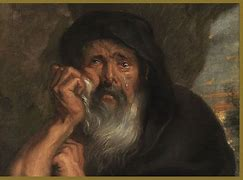

Heráclito (540-570 a.C.), conhecido como “o obscuro”, foi um pensador e filósofo pré-socrático considerado o “Pai da Dialética”.
Heráclito de Éfeso foi um dos principais filósofos pré-socráticos, por ter iniciado o pensamento dialético e defender que a natureza é composta por uma constante mudança.
Experiência Profissional
- "Um dos principais filósofos da Antiguidade pré-socrática."
- "Classificado como partícipe da escola jônica"
- "Iniciou o movimento de ruptura na filosofia pré-socrática"
- "Iniciou o movimento de ruptura na filosofia pré-socrática"
Suas principais frases
- “Os olhos e os ouvidos são maus testemunhos quando a alma não presta.”
- "Não podemos banhar-nos duas vezes no mesmo rio porque as águas renovam-se a cada instante.”
- “A oposição traz concórdia. Da discórdia advém a mais perfeita harmonia.”
- “A verdadeira constituição das coisas gosta de ocultar-se.”
- “Para os seres despertos, há somente um mundo comum.”